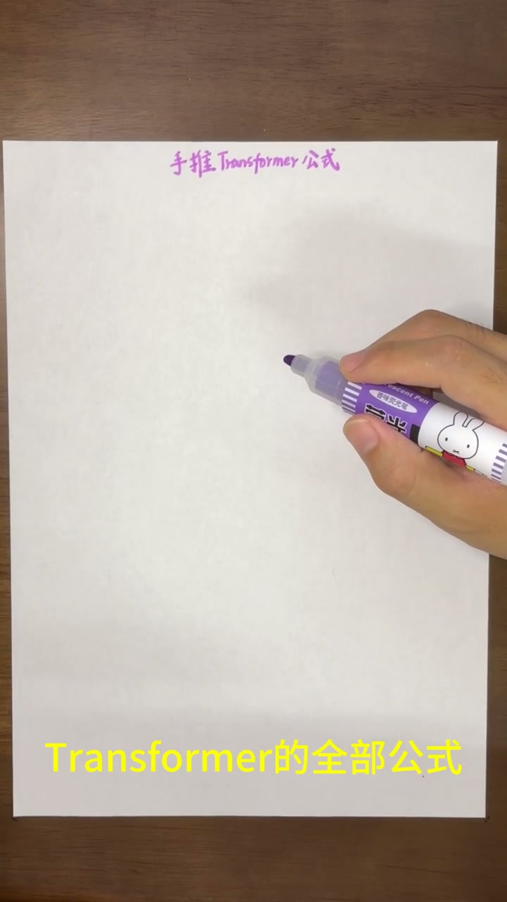
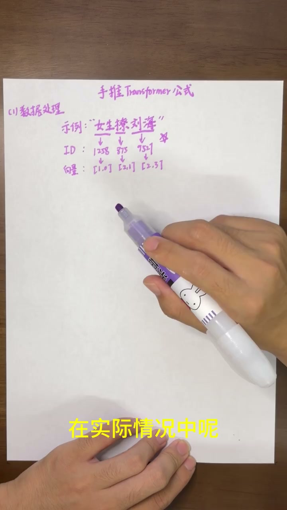
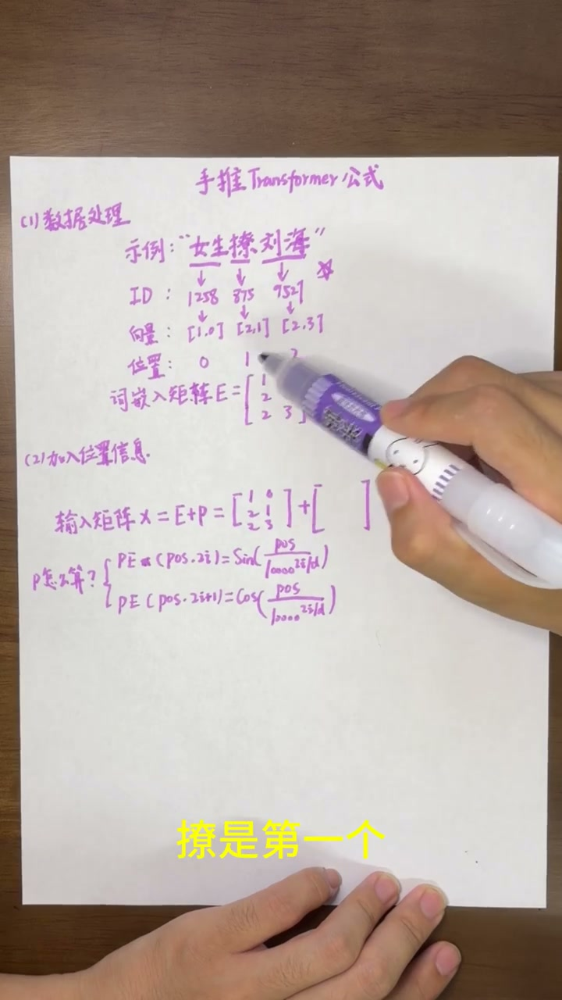
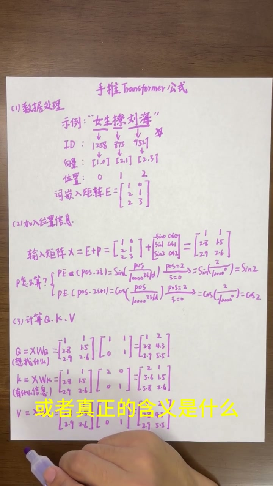
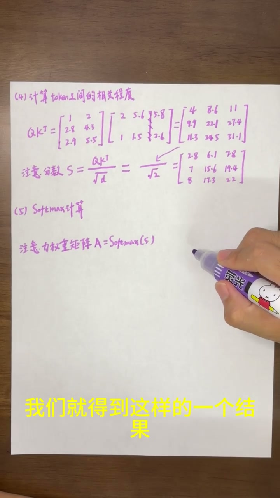

开场：手推全部公式
00:00本期通过一个实实在在的例子——"女生撩刘海"——来演算Transformer中自注意力机制的完整计算过程。选用这个例子是因为主播名字就叫刘海（笑）。

第一步：数据处理 — Token化+嵌入
00:24通过分词器，把"女生撩刘海"分成三个Token：女生、撩、刘海。每个Token在词表中找到ID编号：女生1258、撩875、刘海9527（9527致敬周星驰）。然后用ID在随机生成的Embedding矩阵中查找对应向量。为方便计算，示例用二维整数表示。
第二步：位置编码（Positional Encoding）
01:09词嵌入矩阵不能直接放入Transformer，必须加入位置信息。关键知识点：计算机数数从0开始——"女生"是位置0、"撩"是位置1、"刘海"是位置2。

01:49原始Transformer使用正弦和余弦函数生成位置编码：
- 偶数维（2i）：PE(pos,2i) = sin(pos / 10000^(2i/d))
- 奇数维（2i+1）：PE(pos,2i+1) = cos(pos / 10000^(2i/d))
其中pos是Token位置，i是维度序号。本例中向量是二维的，i只能是0。以"刘海"（pos=2）为例：偶数维=sin(2)，奇数维=cos(2)。
02:50最终输入矩阵 X = 词嵌入矩阵E + 位置编码矩阵P。
第三步：计算Q、K、V
02:56Q、K、V都是通过X乘以对应的参数矩阵（W_Q、W_K、W_V）得到的。这三个参数矩阵在训练开始时随机生成，后续训练"调参"就包括调整它们。

03:21Q、K、V的语义含义：
- Q（Query，查询）：这个Token"想找什么信息"。比如"女生"的Q可能表达"想知道和我有关的动作是什么"
- K（Key，键）：这个Token"有什么信息"。比如"女生"的K包含"我是人物、女性、动作的执行者"
- V（Value，值）：这个Token"真正的含义"。最终目标就是获得更准确的V值
第四步：注意力分数 — Q×K^T / √d
04:02让每个Token的Q分别与其他Token的K做点积（Q×K^T），得到"关注程度分数矩阵"。例如27.4在第二行第三列，表示"撩"这个Token对"刘海"这个Token的关注程度分数。
04:38然后除以√d（d为向量维度）做缩放。为什么要缩放？向量维度越大，点积值越大，如果不控制，Softmax的结果会变得很极端。
第五步：Softmax — 把分数变成比例
05:00通过Softmax计算，把注意力分数变成占比例的权重，每行之和为1。例如：0.8在第一行（"女生"）、第三列（"刘海"），表示

第六步：加权求和 — 输出Z = A × V
05:44注意力权重矩阵A与值矩阵V相乘，得到输出矩阵Z。每个Token的新向量融合了上下文中其他Token的信息：例如"女生"的新向量在保留自身信息的基础上，融合了"女生"、"撩"、"刘海"三个Token传递过来的内容。

06:06整个计算可以写成一个著名的公式——缩放点积注意力（Scaled Dot-Product Attention）：
下期预告：Transformer后续的计算过程（前馈网络、残差连接等）。